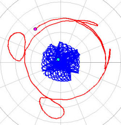
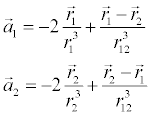

[氦原子中兩個電子的運行軌跡]
這項古典氦模型是一個三體問題的範例，它很相似由一個太陽和兩個質量較輕的行星所形成的三體問題。但有一個很大的不同是氦原子的兩個電子互相排斥，
不像行星的例子中兩顆行星間的作用力是互相吸引。如果我們忽略原子核的微小運動，那兩個電子的運動方程式可以寫作

在這裡 r1 跟 r2 向量是從給定原子核所在的原點開始算，而r12 是兩個電子間距離的純量。電子的質量和電量所使用的單位都是單一的，
在這個單位下氦原子核所帶的電量是2。
由於電子們有時會很接近原子核，它們的加速度可以變得非常的大，因此一個很小的時間步調 Δt 是需要的。但是在模擬中從頭到尾使用一樣小的時間步調是很沒效率的，因此作為替代提出了一個可變的時間步調 ，也就是一個自適應步調大小的演算法。一個自適應步調大小的演算法可以用來作為任何標準數值的演算法來解決不同的等式。 RK45演算法所描述的便是自適應的，也是解決這類問題的一種全面的選擇。
大多數情況下會產生一個不穩定的軌跡，其中一個電子最終會遠離原子(自電離)。 測試這個初始狀態r1=(1.4,0), r2=(-1,0), v1=(0,0.86) 和 v2=(0,-1)並觀察其交織的軌跡。 對這個狀態作一些微小的改變並觀察自電離。
請見: Section 5.12 and Project 5.19 in An Introduction to Computer Simulation Methods (3rd ed.) by H. Gould, J. Tobochnik, and W. Christian.
古典氦模型是改編自Wolfgang Christian from An Introduction to Computer Simulation Methods (3rd ed.) by H. Gould, J. Tobochnik and W. Christian。 你可以檢視並修改一個已經編譯過的EJS模型。當你運行這個模型時(雙擊這個模型的jar檔案) ，在區塊內點擊右鍵並從跳出的選單中選擇"Open Ejs Model"。當然你必須先在你的電腦上安裝Easy Java Simulations (EJS) 4.1版本的編輯及建模工具。
更多有關EJS的資訊:<http://www.um.es/fem/Ejs/> 以及 the OSP comPADRE collection <http://www.compadre.org/OSP/>.